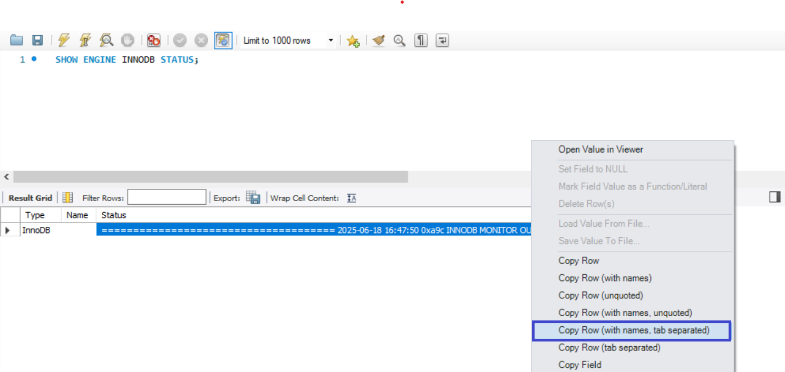

To understand concurrency control techniques based on locking mechanisms.
To explore concurrency control techniques based on the multiversion (MVCC) concept.
To understand how MySQL (InnoDB) handles concurrent transactions effectively.
InnoDB Storage Engine
A storage engine is a software that is used by a database management system to create, read, and update data from a database. InnoDB is a general purpose transactional storage engine for MySQL(since version 5.5.5), designed for high reliability and performance.
Why Do We Use InnoDB in This Course?
Its DML operations follow the ACID model, supporting transactions with commit, rollback, and crash recovery, which help protect user data.
It allows us to observe how concurrency control algorithms work within a DBMS, including strict Two-Phase Locking (2PL) and Multi-Version Concurrency Control (MVCC).
It enables us to examine recovery mechanisms, such as write-ahead logging (WAL), in action.
How to check if InnoDB enabled on MySQL?
To verify whether InnoDB is enabled and set as the default storage engine, execute the following query:
SHOWENGINES;
Look for the InnoDB row in the result. It should show DEFAULT in the Support column, indicating that InnoDB is the default storage engine.
InnoDB Locking
Shared and Exclusive Locks: InnoDB implements standard row-level locking, which includes two types of locks: shared (S) locks and exclusive (X) locks.
Intention Locks InnoDB supports multiple granularity locking, allowing row-level locks and table-level locks to coexist. It introduces two types of intention locks: intention shared (IS) and intention exclusive (IX). For details, refer to the lock compatibility matrix on page 803 of the book.
Isolation Level on MySQL
Isolation level instruct the database engine on how to manage multiple transactions being performed concurrently, and what violations are possible.
READ UNCOMMITTED is the lowest isolation level. It allows transactions to read the most recent version of a row, even if the change has not been committed by other transactions. This leads to the dirty read anomaly, as explained in Lab 1.
READ COMMITTED is one step above READ UNCOMMITTED and prevents dirty reads. In this mode, each SELECToperation retrieves the latest committed version of the row at the time of the query. However, this can result in non-repeatable reads.
REPEATABLE READ is the default isolation level in MySQL. It is one step above READ COMMITTED and prevents non-repeatable reads. In this mode, shared locks are placed on all rows read during the transaction and are held until the transaction ends. This prevents other transactions from modifying any of the data that was read.
SERIALIZABLE is the highest isolation level. It prevents all types of concurrency anomalies. However, it is often impractical due to the extensive locking it requires, which increases the risk of deadlocks and can significantly reduce performance.
Syntax for Setting the Isolation Level in MySQL
SETTRANSACTIONISOLATIONLEVEL[ISOLATIONLEVEL];
InnoDB use REPEATABLE READ as the defualt isolation level.
InnoDB-Supported Concurrency Control Algorithms
The InnoDB transaction model combines the strengths of Multi-Version Concurrency Control (MVCC) and strict Two-Phase Locking (2PL) to balance high concurrency with strong consistency guarantees. InnoDB uses MVCC to enable non-blocking reads, allowing multiple transactions to read data simultaneously without locking. At the same time, it applies strict 2PL for write operations to ensure serializability.
When we refer to write operations, we mean SQL statements such as INSERT, UPDATE and DELETE
InnoDB uses two primary concurrency control mechanisms:
1. Two-Phase Locking (2PL)
InnoDB uses strict two-phase locking to ensure serializability. This means a transaction acquires locks during its execution phase but does not release any exclusive (write) locks until it either commits or rolls back
Example: Observing How InnoDB Uses Strict 2PL
Imagine Ahmed's family and Mohamed's family both trying to book seats for a summer vacation trip to Turkey. They access the reservation system at the same time. Ahmed wants to reserve five seats, while Mohamed wants to reserve four seats. Behind the scenes, InnoDB ensures data consistency by using strict two-phase locking (2PL) — meaning when Ahmed's transaction starts updating the available seat count, it locks the row exclusively. Mohamed's transaction, attempting to update the same row simultaneously, must wait until Ahmed's transaction commits or rolls back. This prevents overlapping writes and guarantees serializability.
Now we will simulate the example using MySQL and observe the InnoDB storage engine:
Create the Database and Table
CREATEDATABASEIFNOTEXISTSReservationDB;USEReservationDB;CREATETABLEseats(IdINTPRIMARYKEYAUTO_INCREMENT,FlyNameVARCHAR(100)NOTNULL,-- Flight NameAvailable_seatsINT-- Available seats on the flight)ENGINE=InnoDB;-- Insert some sample dataINSERTINTOseats(FlyName,Available_seats)VALUES("Turkey",10),("Emaraty",20);
In Session 1 (Ahmed's Transaction): Connect using the previous connection from Lab0 (named local), and open a new SQL query tab
USEReservationDB;SETTRANSACTIONISOLATIONLEVELREPEATABLEREAD;STARTTRANSACTION;-- Ahmed tries to reserve 5 seatsUPDATEseatsSETavailable_seats=available_seats-5WHEREid=1;-- Optional: Use SLEEP() to pause Ahmed's transaction. -- This allows you to observe the lock behavior by giving Mohamed's session time to run concurrently.-- If you prefer not to use SLEEP(), you can simply delay committing Ahmed's transaction -- and manually run Mohamed's session before issuing the COMMIT.DOSLEEP(20);COMMIT;
In Session 2 (Mohamed's Transaction): Go to the Home tab and open the local connection again. (This step simulates a second session connected to the database.) Then, open a new SQL query tab to continue.
-- Mohamed's TransactionUSEReservationDB;SETTRANSACTIONISOLATIONLEVELREPEATABLEREAD;STARTTRANSACTION;-- Mohamed tries to reserve 4 seatsUPDATEseatsSETavailable_seats=available_seats-4WHEREid=1;-- If Ahmed's transaction hasn't committed yet, this query will be BLOCKED.-- It waits for the exclusive lock to be released.COMMIT;
In Session 3
SHOWENGINEINNODBSTATUS;
SHOW ENGINE INNODB STATUS provides a detailed snapshot of the InnoDB storage engine's internal state. This output—often referred to as the InnoDB Monitor—includes several sections such as transaction and lock information, I/O activity, buffer pool usage, deadlock detection, and more.
Run Session 1, Session 2, and Session 3 simultaneously. You will observe that the UPDATE operation in Session 2 keeps running (waiting) until Session 1 commits. Meanwhile, execute Session 3 during this wait period to view the InnoDB status and observe how Session 2 is blocked, waiting for Session 1 to release the lock.
Right-click on the Status column in the InnoDB status output and select Copy Row (with names, tab separated), then paste it into any text editor (e.g., Notepad) to examine the output in detail. In the snapshot below, you can see evidence that Transaction 2 is waiting for Transaction 1 to commit—this clearly demonstrates how InnoDB enforces strict two-phase locking (2PL).

Transaction 2
---TRANSACTION 4939, ACTIVE 3 sec starting index read
mysql tables in use 1, locked 1
LOCK WAIT 2 lock struct(s), heap size 1128, 1 row lock(s)
MySQL thread id 81, OS thread handle 14892, query id 3521 localhost 127.0.0.1 root updating
UPDATE seats SET available_seats = available_seats - 4 WHERE id = 1
------- TRX HAS BEEN WAITING 3 SEC FOR THIS LOCK TO BE GRANTED:
Transaction 1
---TRANSACTION 4938, ACTIVE 5 sec
2 lock struct(s), heap size 1128, 1 row lock(s), undo log entries 1
MySQL thread id 77, OS thread handle 14828, query id 3515 localhost 127.0.0.1 root User sleep
DO SLEEP(20)
Once the sleep duration completes, Transaction 1 commits and releases its exclusive lock, allowing Transaction 2 to acquire the lock and proceed. If you query the available_seats, you will find it equals 1, indicating that both transactions executed without any anomalies, as demonstrated in Lab 1.
Conculation on this example we observe that how InnoDB follow the strict 2PL on updating operation. you can repeat this example by using READ COMMITTED, SERIALIZABLE Isolation level and observe what happen.
2. Multiversion Concurrency Control (MVCC)
Definition
MVCC is a concurrency control technique used by many modern databases (like PostgreSQL, MySQL InnoDB, and Oracle) to allow multiple transactions to access the same data simultaneously without locking.
How MVCC Works
Every time a transaction reads data, it sees a snapshot of the database at the time the transaction started.
When data is updated, the database creates a new version of the row instead of overwriting the old one.
Other transactions can continue reading the old version until they commit or refresh.
Objective
Understand how MVCC in InnoDB allows multiple read operations to happen at the same time, without locking, and while updates may be happening in the background.
We will simulate Session A (Reader) and Session B (Updater). You can do this using two different database connections (e.g., two tabs in MySQL Workbench).
Session A (Reader)
STARTTRANSACTION;SELECT*FROMemployeesWHEREid=2;
Observation:
All rows are returning back, WHERE id = 2 returns 6000.
Transaction A does not see the update from Transaction B because MVCC provides a consistent snapshot of the data at the moment A starts.
MVCC keeps multiple versions of rows, so Transaction A reads the version that existed before B's update. Even if B commits, A continues to see the old data until it finishes, ensuring repeatable reads without blocking.
Key Discussion Points
Feature
Observation
MVCC
Keeps a snapshot per transaction (using undo logs).
Multiple Reads
Readers don’t block writers, and writers don’t block readers.
Isolation
REPEATABLE READ is default in InnoDB – keeps results stable within a transaction.
Consistency
Session A always sees the same data until it commits.
Performance
Improves concurrency: multiple users can safely read and write.
Summary
This simple example shows how MVCC enables multiple users to read data at the same time, even if another transaction is updating the same rows. Each reader gets a consistent snapshot — a powerful feature of InnoDB.
Advanced work
You can clone this repostory to explore the internal details of concurrency control simulations.
Assignment (Simulate Deadlock Scenario)
Due Date on 28/6/2025
Read pages 789–792 from the primary textbook: Fundamentals of Database Systems.
Please review the general lab structure requirements here
You must use MySQL, as this lab focuses specifically on the InnoDB storage engine.
What to assign:
A brief paragraph describing the real-world situation you are simulating to create a deadlock.
A screenshot of the table structure (after creation) that you will use in the simulation.
A screenshot showing the result of the first session after execution.
A screenshot showing the result of the second session after execution.
While both Transaction 1 and Transaction 2 are still running and waiting on each other, open a third session and execute the following command: SHOW ENGINE INNODB STATUS;.
A snippet of the SHOW ENGINE INNODB STATUS output showing that Transaction 1 is waiting for a lock held by Transaction 2.
A snippet showing that Transaction 2 is waiting for a lock held by Transaction 1.
After the deadlock occurs and InnoDB resolves it automatically, re-run third session.
A snippet from the InnoDB Monitor output showing that a deadlock has been detected and resolved. to do this you should re-run step 5 agin and observe the LATEST DETECTED DEADLOCK.
A brief paragraph discussing what happened and how InnoDB detects deadlock Read this.